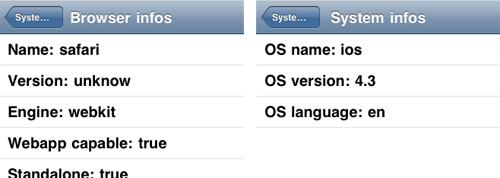

System Infos

iui-system-info.js is an extension for the iUI framework. It gives system information in order to perform device detection. It may also be useful for the webapp developer you are to detect screen resolution, navigation mode, device capabilites & browser version.
Author: Remi Grumeau
Version: 1.1
- Getting Started
- Frequently Asked Questions
- iUI code documentation
- Advanced styling & themes
Like in most open-source projects, the more we are, the meyer it is! HTML/CSS/JS, documentation, design, translation, ...
Don’t be shy
1. Instructions of use
System Info has been created to help devs to get some common informations easily. If you need a really strong and complete device capabilities checker, perhaps you'd better grab latest release of Modernizr.
1.1. OS infos
iui.sysinfo.os.name (based on user-agent)
- ios
- android
- blackberry
- playbook
- windows_phone
- maemo
- webos
- macos
- windows
iui.sysinfo.os.version (based on user-agent)
- returns OS version number based on user-agent (or xp/vista/seven for windows)
iui.sysinfo.os.lang (based on navigator.language)
- returns the 2 first letters
1.2. Device infos
iui.sysinfo.device.vendor (based on user-agent)
- apple
- google
- htc
- motorola
- nokia
- rim
- samsung
- unknow
iui.sysinfo.device.type (based on user-agent)
- phone
- pod
- tablet
- desktop
iui.sysinfo.device.touch (based on window.touch)
- true
- false
iui.sysinfo.device.gps (based on navigator.geolocation)
- true
- false
iui.sysinfo.device.orientation (based on window.onorientation)
- true
- false
1.3. Browser infos
iui.sysinfo.browser.name (based on user-agent)
- blackberry
- chrome
- dolfin
- fennec
- firefox
- ie
- safari
- opera
- opera_mobile
- unknow
iui.sysinfo.browser.version (based on user-agent)
- 4 / 5 / 6 (Blackberry)
- 4 / 5 (Chrome)
- 2 / 3 / 3.5 / 3.6 (Firefox)
- 1 (Fennec)
- 6 / 7 / 8 / 9 (IE)
- 8 / 9 / 10 (Opera)
- 1 (Playbook)
- 3 / 4 / 4.1 / 5 (Safari)
- unknow
iui.sysinfo.browser.webapp (based on window.navigator.standalone)
- true
- false
iui.sysinfo.browser.standalone (based on window.navigator.standalone - only on iOS)
- true
- false
1.4. Screen infos
iui.sysinfo.screen.width (based on window.innerWidth)
- value in px
iui.sysinfo.screen.height (based on window.innerHeight)
- value in px
1.5. Storage Infos
iui.sysinfo.storage.cookie (based on navigator.cookieEnabled)
- true
- false
iui.sysinfo.storage.local
- true
- false
iui.sysinfo.storage.database
- true
- false
1.6. Webkit Infos
iui.sysinfo.webkit.transition
- true
- false
iui.sysinfo.webkit.points
- true
- false
iui.sysinfo.webkit.transform
- true
- false
iui.sysinfo.webkit.matrix
- true
- false
2. ChangeLog
1.1
- Added Bada support
- Added Blackberry support
- Added PlayBook support
- Bugfixes
1.0
- Initial release